01 / Discovery
The daily edit
Stories, recommendations, saved pieces, and the pleasure of looking.
- Daily Room
- Browse and save
- Style discovery
Patina / iOS product direction
A leadership proposal to make the Companion Patina’s visible center of gravity—present through the life of a room, and never in the way.
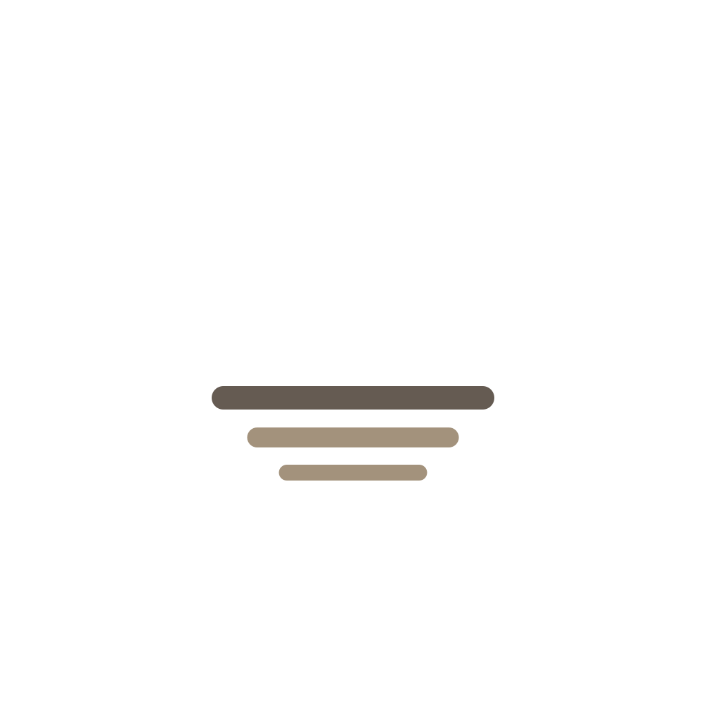
the companion · Patina made visibleExecutive verdict
The craft is already unusually coherent. The next constraint is deciding what the product wants to be every time it opens.
A recognizable character that can carry Patina’s warmth, memory, and point of view.
Give it defined states, a reserved home, and behavior worthy of a brand asset.
Let the Companion connect discovery, rooms, and Studio without becoming a utility drawer.
Two internal UX programs—26 recommendations followed by 46 findings—show that the team can execute. Do not spend the next quarter reopening solved hygiene.
Keep the character. Give it a system.
Current product shape
Breadth can become Patina’s moat. First, each mode needs a clear role—and the home experience needs one governing idea.
01 / Discovery
Stories, recommendations, saved pieces, and the pleasure of looking.
02 / Spatial intelligence
Scanning, dimensions, room context, and recommendations that understand place.
03 / Client relationship
Designer help, projects, decisions, messages, proposals, money, and documents.
The Companion is the thread that can make these three products feel like one Patina.
Activation
After entry, a new customer sees three promise slides and five style questions before the first useful artifact. “Skip” only advances to the quiz.
Design criterion
Deliver a meaningful exchange in under 90 seconds: a taste insight, a saved piece, or a room.
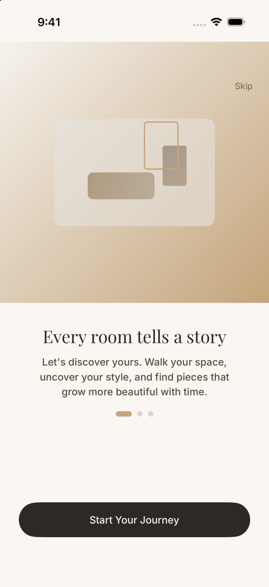
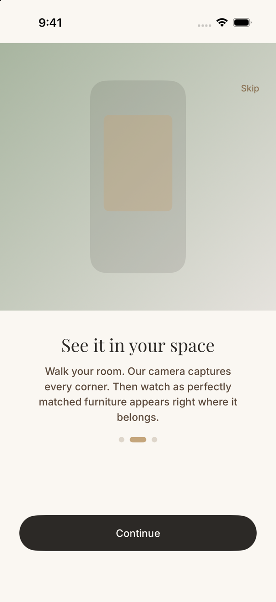
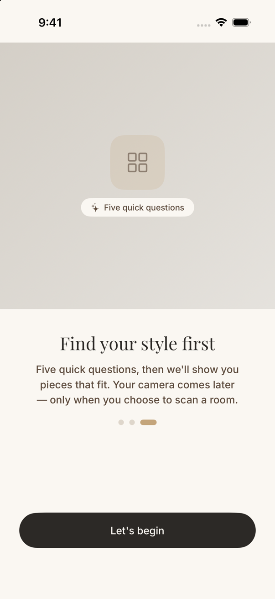
System-level friction
The collisions are not reasons to remove Patina’s most distinctive interaction. They show that the Companion deserves first-class layout, motion, and accessibility rules.
Room reveal
The bubble lands on the primary confirmation action.
Style quiz
It competes with progress and the next-step control.
Profile / Studio
It covers navigation rows, including design help and messages.
Collapsed is the default: a centered strata circle with one quiet hint beneath it. Its shell expands only when scan progress, a quiz, or a real decision needs room. Content never renders beneath the active shape.
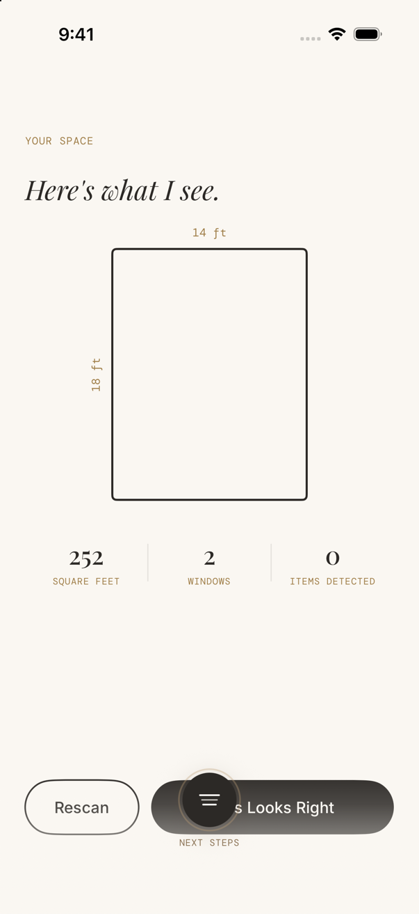
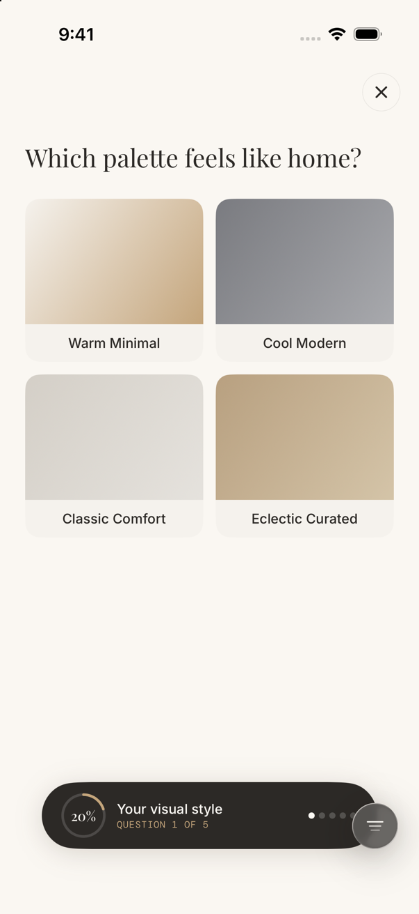
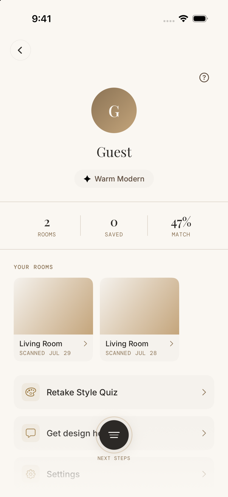
P0 / Product trust
The permission screen currently says Patina does not capture photos or video, that camera data stays on-device, and that only dimensions are stored.
Trust is not legal copy at the edge of the experience. It is the product.
Source inspection shows the scan workflow can capture and upload scan artifacts. Leadership should align product behavior, retention policy, and plain-language consent before using the camera story as a growth surface.
Copy says
“Camera data stays on your device.”
“Only room dimensions are stored—not images.”
Required decision
P0 / Inclusive quality
Patina scales its type. Several defining screens do not recompose around the larger type, so the content becomes clipped, layered, or unusable.
Acceptance bar
No truncation at Accessibility Extra Extra Extra Large. No primary or repeated control below 44×44. No small essential text below contrast target.
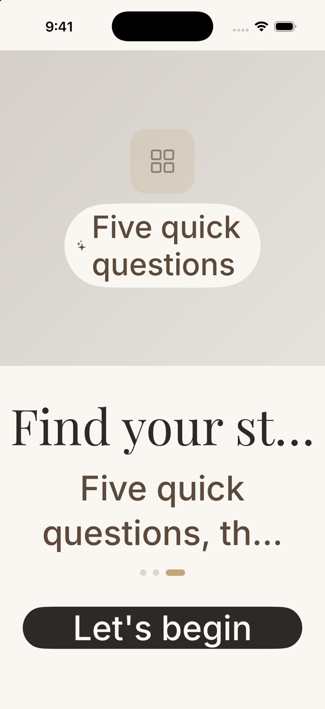
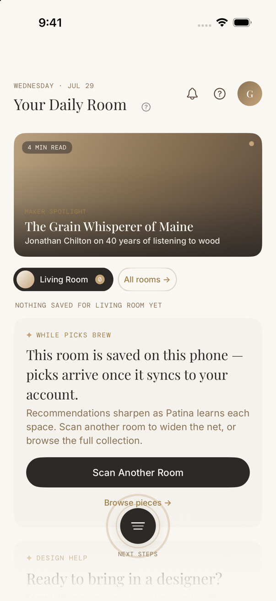
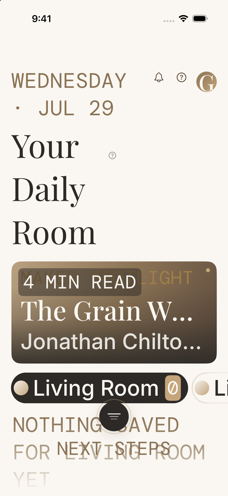
Recommended product thesis
The Companion is not a chatbot or a shortcut menu. It is Patina made visible: a steady presence that remembers the room, notices the grain and materials someone returns to, and helps the work move forward.
At rest it is the centered strata circle already in the app, with a subtle hint beneath it and no content inside its reserved region.
It speaks from real context: the room, saved pieces, honest materials, designer work, and what changed.
It begins as a guide, becomes a room memory, and later carries the thread between client and Studio.
The Companion should always answer: what changed, what it noticed, and what comes next.
Recommended product shell
The Companion Hearth is reserved space—not another bar. At rest, Patina collapses to the current centered circle and strata mark, with only a quiet contextual hint below.
One daily edit, one next action, and what changed in the relationship.
Rooms, scans, saved pieces by room, and room-aware discovery.
Designer relationship, projects, decisions, messages, money, and records.
The strata stays recognizable while its dark shell takes only the space the current communication needs.
Today, Spaces, and Studio remain stable realms beneath the surface. The centered Companion signals one relationship across them; ordinary back, header, and deep-link behavior stays predictable.
Companion motion system
The current strata circle is the anchor. The same dark shell widens for scan progress, then deepens for a quiz or decision—without swapping in a different component.
Centered circle, strata visible, with a short contextual hint below. This is the quiet default whenever the page can speak for itself.
The circle becomes a compact capsule for bounded feedback such as room-scan status. It collapses when the work completes.
The shell gains depth for quiz progress, rationale, or a choice. A full sheet is reserved for longer conversation and review.
Motion direction: matched geometry with a 420–520ms spring; the shell moves first and copy follows about 80ms later. With Reduce Motion, use a short crossfade and no ambient pulse.
Your answer helps Patina understand the warmth and texture you return to.
Experience direction
This is where the Companion stops feeling like an interface and starts feeling like a relationship.
First run
Open with one clear promise, then let the customer make something. The centered strata circle introduces itself through one useful observation—not a tutorial—and collapses when the page can carry the story.
Use art-directed room and material photography. The current illustration language reads as placeholder, not taste authority.
Style
Replace flat gradients and emoji with real rooms, linen, woods, and metals. The Companion expands for quiz progress, names the signals it heard, then returns to its centered circle.
Today
The collapsed circle and its quiet hint carry the single most useful next move. It expands only when the customer asks why or starts the action.
As the relationship grows, its role changes: guide for a guest, room memory after a scan, project thread for a client.
Studio refinement
The current hub exposes the breadth of the relationship as a flat set of destinations. The collapsed Companion can quietly carry what needs attention, then expand only for the decision itself.
Current
Projects, messages, decisions, proposals, invoices, budget, documents, marketplace, and help all carry similar visual weight.
Proposed
Awaiting you → In progress → Conversation → Money & documents → Archive.
Organize the Studio around state, not database nouns.
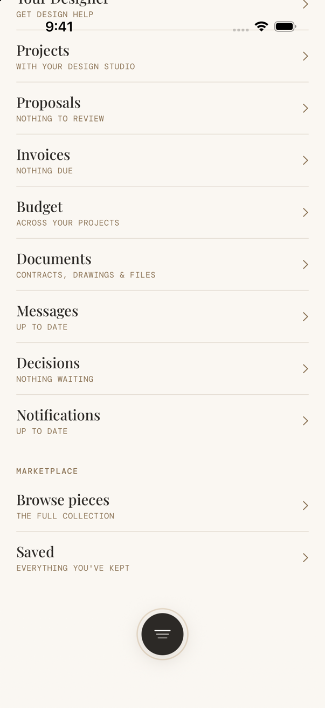
Decision options
The planning ranges are directional. Scope should be locked after an instrumented baseline and an interactive prototype.
Swipe the table to compare all three paths →
Stabilize the current character.
Make it Patina’s relationship layer.
Let it grow with every room.
Build the Companion system now. Let the Living Companion remain the horizon—not the next dependency.
Recommended sequence
Sequence the work so the Companion becomes safer, clearer, and more valuable in every phase.
Do not begin by making the Companion talk more. Begin by making every state clear, useful, quiet, and trustworthy.
Decision and scorecard
Set numeric targets after a two-week instrumentation baseline; do not invent baselines to justify the redesign.
Leadership ask
Appendix / Review method
This proposal is grounded in the current consumer app, its SwiftUI architecture, live simulator behavior, and the two completed internal review programs.
Build reviewed
Bundle cloud.patina.app
Version 1.0 (1)
Source revision 09923909
Review date 2026-07-29
Verification
iPhone 17 Pro973D1724-90BF-4A0A-B02D-481D561547B3
Light and dark appearance
Standard and AX5 Dynamic Type
Boundary
Camera, LiDAR, AR accuracy, and physical-device performance were not revalidated. Signed-in Studio evidence includes the repository’s July 28 validation captures.
Scope
Consumer Patina iOS only. Patina Field, web portals, and operational redesign are outside this review.
Deliverable integrity
No Swift, project, database, or production behavior was changed. This HTML proposal and its review assets are the only deliverables.
The opportunity is not to add more Patina.
It is to let the Companion make Patina unmistakable.